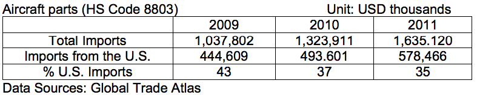

Aviation Market
Overview
Return to top

China is one of the world's fastest growing civil aviation markets. The industry has grown at double-digit rates for several years. Industry forecasts expect growth to remain strong over the medium term, averaging 7 percent over the next 20 years.
In order to keep pace with demand, China is forecast to require 5,000 new aircraft valued at $600 billion over the next 20 years. Most of these will be single-aisle aircraft designed for short-haul domestic travel. Commercial opportunities in the civil aviation market include final assembly and tier-one suppliers, small niche parts manufacturers, airport design and construction companies, and general aviation among others.
The Chinese face three key challenges that threaten to limit this growth: inadequate infrastructure, overly restrictive airspace, and limited skilled human resources. In November 2010, Chinese military and civilian authorities issued a joint statement outlining liberalization of airspace below 4,000 meters (13,000 feet) by 2020. Personnel training and capacity building are a priority for regulators, airlines, airport operators and manufacturers. U.S. firms often use training programs to establish productive partnerships with Chinese clients. Associations such as the U.S.-China Aviation Cooperation Program (ACP) can serve as valuable vehicles for smaller firms to leverage similar opportunities.
Sub-Sector Best Prospects
Return to top
Aircraft Parts: Manufacture and Repair

China's import market for aircraft parts and components exceeded $1.6 billion in 2010, an increase of over 23.5 percent compared with last year. China's demand for aircraft parts can be attributed to a number of factors including an increasing capacity utilization rate, the age and expansion of China's aircraft fleet, and the domestic production and assembly of aircraft.
There are 1,745 registered commercial transport aircraft in China with an average age of five years, and as the fleet continues to age, it will require parts and equipment for routine maintenance and repair. Though there are a number of major domestic aircraft and parts manufacturers scattered throughout China, the sector is still underdeveloped, creating a strong demand for reliable imported products and technologies to ensure quality standards.
China's domestic aircraft part and assembly manufacturing sector is also growing. In addition to approximately 200 small aircraft parts manufacturers, there are also a number of regionally-based major manufacturers concentrated in Shanghai, Chengdu, Xi'an, Jiangxi and Shenyang. China's domestic manufacturing base is developing, as reflected by the commitments of large aircraft and engine manufactures to expand procurement in China over the long term. However, most highly technical and sophisticated parts and assemblies will continue to be imported until production quality meets international standards. At the present time, domestic manufacturers do not have the ability to produce all of the qualified materials and parts.
Airports
China currently has 180 civil aviation airports, including the world's second busiest in Beijing, with plans to expand aggressively to 244 by 2020. The government announced plans to invest $64 billion to build and improve 97 airports by 2021, including 78 green field projects. The expansion will place 80 percent of China's population and 96 percent of its GDP within 100 kilometers of the nearest airport, greatly enhancing the potential for aviation growth.
The airport system at present is highly concentrated, with top airports suffering from major congestion. The top three airports located in Beijing, Shanghai and Guangzhou account for 1/3 of all traffic, while the top 14 airports handle 2/3 of total traffic nationwide. Local industry estimates indicate that 40 of China's airports are already at or near capacity, with another 29 expected to reach this limit within the next two years. To relieve congestion, China opened 19 new airports over a three-year period from 2009-2011.
Construction of the long-awaited second airport in Beijing could begin in 2012. The airport is expected to be built in the southern part of China's capital, with an expected capacity of 100 million passengers a year. The bidding process of Terminal Area Designing was completed at the end of 2011.
International companies will have opportunities to participate in both airport design and infrastructure construction. Qualified companies may be approved to compete with domestic companies via a bidding process for design, consultation, surveillance, management, and construction of designated civil airport projects. So far, Beijing Capital Airport, Shanghai Pudong Airport, Shanghai Hongqiao Airport, Shenzhen Huangtian Airport, and Guangzhou's new Baiyun Airport have all been designed by international companies.
Ground service is another area in which foreign companies can actively participate. Beijing Capital Airport, Guangzhou Baiyun Airport, and Chengdu Shuangliu Airport have all established joint ventures with foreign partners (Singapore, Indonesia and UK) in ground services. Shanghai Airport Ground cooperated with Cargo Warehouse and Lufthansa set up a joint venture. China Air Oil Supply Corporation (CAOSC) has established many joint ventures with foreign companies to provide air oil supply services.
General Aviation
General Aviation (GA) remains an underdeveloped part of China's aviation industry, but it is poised for growth. Local industry contacts estimate that China has about 1,000 GA aircraft, compared with more than 220,000 in the United States, including only about 100 large business jets. Yet the number of total GA flight hours in 2011 grew 16 percent to
455,000, clearly indicating the industry's growth potential.
Strict military control over roughly 70 percent of all Chinese airspace is the single largest factor limiting growth of this industry. A welcome change came in November 2010 when civilian and military authorities issued a joint reform document calling for liberalization of low altitude airspace under 4,000 meters (13,000 feet). Implementation of the reform will roll out in three stages, starting with an Experimental Phase in Guangzhou and Shenyang. The policy outlines a national rollout by 2015, and a final deepening and consolidation by 2020. While the details remain vague, this policy shift indicates clear support for GA and should have large and positive impacts on the sector. Market potential is vast. In the southern province of Guangdong alone (one of the two pilot areas), market demand is estimated at 200-250 aircraft worth $1-1.25 billion.
Opportunities
Return to top
China Commercial Aircraft Summit 2012
Date: April 25-27, 2012
Venue: Intercontinental Pudong Shanghai China
Contact: Haway Huang, Sales Manager, Oppland Organizers
Tel: (86 21) 5058-9600
Fax: (86 21) 5058-5987
Email: hawayh@opplandcorp.com
Website: http://www.opplandcorp.com/aero/index.htm
China General Aviation Forum 2012
Date: June 26-28, 2012
Venue: Beijing King Wing Hot Spring Hotel
Organizer: Shanghai World Expo Group
Contact: Ms. Enlin Chao
Tel: +1 (925) 439-3799 ext. 14
Fax: +1 (925) 439-3268
Email: EnlinChao@UniworldUSA.com
Website: http://www.chinacivilaviation.com/GAForum/en/default.asp
6th China Civil Aviation Development Forum
Date: May, 2012
Venue: Beijing TBD
Organizer: Civil Aviation Authority of China (CAAC)
Contact: Richard Wang, Sales Manager
Tel: (86 10) 5825-0412
Fax: (86 10) 6472-0514
Email: caacforum@camic.cn
Website: http://www.ccadf.cn/ccadfEN/indexen.htm
6th AvioniChina (China International Conference & Exhibition on Avionics & Testing Equipment)
Date: September 26-28, 2012
Venue: Shanghai Science and Technology Exhibition Center
Organizer: Grace Fair International Ltd.
Contact: Mr. Jasper Shi, Director Overseas Marketing
Tel: (86 10) 6439-0338
Email: jasper@gracefair.com
Website: www.avionichina.com
Air Show China
Date: November 13-15, 2012
Fax: (86 75) 6337-6415
E-mail: zhuhai@airshow.com.cn
Website: http://www.airshow.com.cn/en/
Web Resources
Return to top
Government Authorities
Civil Aviation Administration of China (CAAC), www.caac.gov.cn
Air Traffic Management Bureau: http://www.atmb.net.cn
Center of Aviation Safety Technology: http://www.castc.org.cn/
Airlines
Air China, www.airchina.com.cn
China Eastern Airlines, www.ce-air.com
China Southern Airlines, www.cs-air.com
Shanghai Airlines, www.shanghai-air.com
Spring Airlines, www.air-spring.com
Aircraft Manufacturers
Aviation Industry Corporation of China (AVIC), http://www.avic.com.cn
Commercial Aircraft Corporation of China (COMAC), http://www.comac.cc/
AVIC Commercial Aircraft Co., www.acac.com.cn
MRO Facilities
Aircraft Maintenance and Engineering Corporation (AMECO), www.ameco.com.cn
Shanghai Technologies Aerospace Co. (STARCO), http://www.staero.aero/starco.html
Guangzhou Aircraft Maintenance Engineering Co. (GAMECO), www.gameco.com.cn
Taikoo Aircraft Engineering Company Limited (TAECO), www.taeco.com
MTU Maintenance (Zhuhai), www.mtuzhuhai.com
GE Engine Services (Xiamen)
Sichuan Snecma Aero Engine Maintenance Company Ltd. (SSAMC), www.snecma.com
Aircraft Trading Companies
China Aviation Supplies Corporation (CASC), www.casc.com.cn
Other
CAAC news: http://www.caacnews.com.cn/ (in Mandarin)
Civil aviation industry analysis report: http://www.ocn.com.cn/reports/2006084minyonghangkong.htm (in Mandarin)
China Civil Aviation Report: http://www.UniworldChina.com
U.S. & Foreign Commercial Service Aviation Industry Contacts in China
Beijing
Contact: Ida Peng
No.55 An Jia Lou Road,
Chaoyang District
Beijing 100600, China
Tel: (86 10) 8531-3947
Fax: (86 10) 8531-4343
Email: aiqun.peng@trade.gov
Guangzhou
Contact: Lena Yang
14F China Hotel Office Tower,
Room 1461, Liuhua Road,
Guangzhou 510015, China
Tel: (86 20) 8667-4011
Fax: (86 20) 8666-6409
Email: lena.yang@trade.gov
Shenyang
Contact: Liu Yang
No.52 Shi Si Wei Lu He Ping District
Shenyang 110003, China
Tel: (86 24) 2322-1198
Fax: (86 24) 2322-2206
Email: yang.liu@trade.gov
Shanghai
Contact: Vivien Bao
Shanghai Center, Suite 631
1376 Nanjing West Road, Shanghai
200040, China
Tel: (86 21) 6279-7630
Fax: (86 21) 6279-7639
Email: vivien.bao@trade.gov
Chengdu
Contact: Cui Shiyang
No.4 Lingshiguan Road,
Chengdu 610041, China
Tel: (86 28) 8558-9642
Fax: (86 28) 8668-9221
Email: cui.shiyang@trade.gov